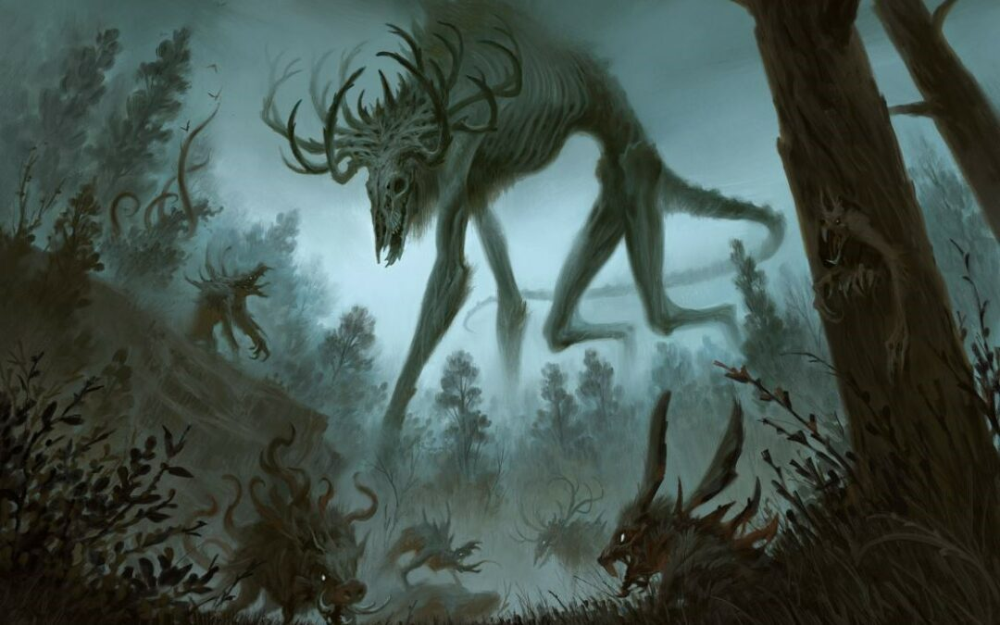

File-002 — Hollow Caller
Visual Record:
Recovered photo from AshGrave. Visual distortion confirmed genuine.
Description:
The Beast, refered by the locals as Ulthrash or simply the beast, is a gigantic bone-like deer anomaly discovered on the mountains of AshGrave. Its presence seems to induce a mutagenic like evolutions on entities up to 100 kilometers away. Visual and Auditory phenomena reported by research personnel include whispers in an unknown language. Researches were only able to make out one word, "Prepare"
Exposure to presence emitted by the Ulthrash has resulted in psychological deterioration and agressiveness, and in later cases, vbody mutations such as tentacles and increased muscle mass.
Containment Protocol:
- None as of late, If seen run as far as possible
Addendum 001-A:
Following Incident stated in Incident Report: Case File 0412-AE, any procedure to contain is to be terminated and all residents affected must be evacuated as soon as possible.